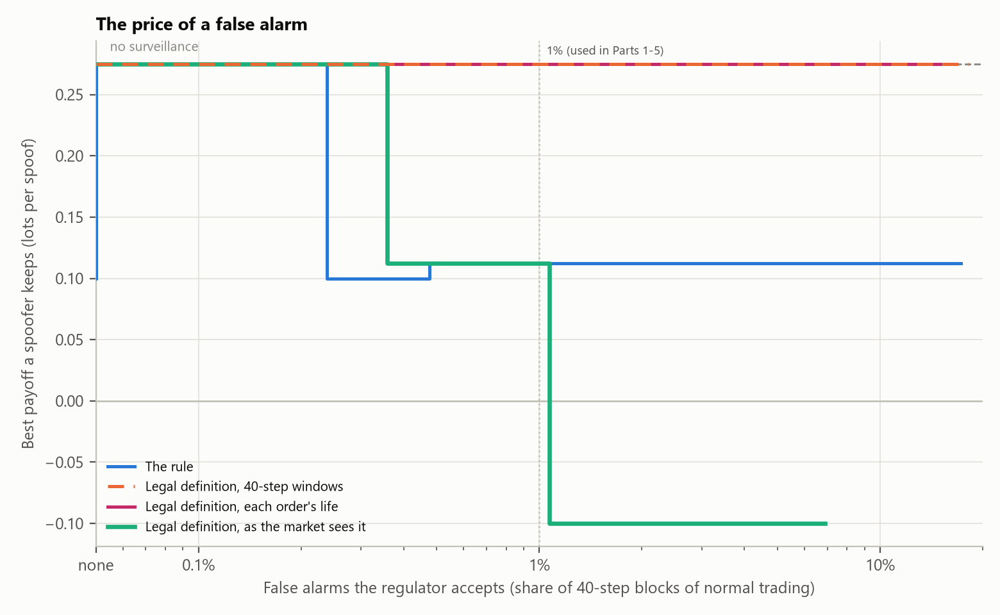

Research LabPick a market situation and see how every detector reacts.
Research LabPick a market situation and see how every detector reacts.Part 4: let a program look for the dodges
In Part 3 I tried the dodges I could think of. That has an obvious weakness: a spoofer may think of something I did not. So I wrote a challenger, a small search program whose only goal is to make money from spoofing without being caught, and set it against each detector in turn.
The challenger controls seven settings, and every one is an ordinary thing a trader can do: how big the wall is, how far behind the best price it sits, how many price levels it is split across, how long it stays up after the genuine order trades, how much of the trade it buys back, and whether to add a second large order on the other side, and how far away. It works like evolution. It starts with 32 random strategies, keeps the 8 that did best, makes changed copies of them, and repeats for 15 rounds.
Its score is what a spoofer cares about: how many lots of its genuine order traded, minus anything it bought back and any of its wall that traded, beyond an honest twin (the same session with only the genuine order). If a spoof is caught, its profit is confiscated. It ran four searches, against no surveillance, the rule, and two versions of the legal definition, each learning only from that detector's alerts, on 12 practice sessions. Every strategy it ever tried was then scored against every detector, and the five best were re-tested on 40 sessions it never saw, so a lucky run cannot pass for a real loophole.
First, it cheated
Before it found anything wrong with the detector, it found two things wrong with my scoring. When every lot the spoofer sold counted, it added a second, real order near the price and simply sold more. When I compared each strategy with the same strategy minus the wall, it added a decoy that hurt that twin, so the wall merely undid self-inflicted harm and scored as a gain. Both times the challenger had found a hole in how I measured success, not in the detector. Search programs and AI systems do this all the time; it is called reward hacking. The fix was to score only what a spoof is for: getting the genuine order traded.
Figure 10 The challenger learning, round by round
Figure 11 What the best strategy keeps, on sessions it never saw
Show the data for Figure 11
Then it found a real loophole
Against the legal definition as I first wrote it, the challenger's best strategy was: . It kept lots per spoof, as much as the best it found with no surveillance at all (), and the detector never caught it. Against the hand-written rule, simply splitting the wall into layers was enough (). The next section explains the loophole and the fix.
Against the fixed version, the best it could find was : it kept lots per spoof, of the unwatched best, by staying small enough to sit under the alert threshold. The two versions seemed to cover each other's gaps: the older, windowed version caught of that small spoof, and the new version caught of the decoy trick.
Both versions together
So I added a fifth detector that alerts when either version does, and set the challenger on it too. It did not help: the challenger kept the same small wall and added a decoy to slip past the windowed half as well (), keeping lots per spoof, of the unwatched best. Meanwhile combining raised false alarms to of calm trading and flagged of the honest market makers. What is left is a matter of size, not of rules: a spoof small enough to sit under the alert threshold escapes, and catching it means accepting more false alarms.
The loophole it found, and the fix
The legal definition, as I first wrote it, counts an account's interest on balance: buying interest minus selling interest. That is what lets it ignore market makers, who quote both sides equally. The challenger found the flip side. Put up the wall, then put an equally large order on the other side, far from the price, and cancel both together. On balance the account showed no interest and withdrew none, so the detector saw nothing. Book-reading traders, though, only look at the five price levels nearest the best price. A decoy eight ticks away is invisible to them, so the wall works exactly as before.
The fix comes from the law itself. Manipulation means giving a false or misleading signal, and a signal nobody can see is not a signal. So the refined detector weighs every order by how often traders can actually see a price that far from the best. I measured that on normal trading: a price up to four ticks back is always among the five levels traders read, five ticks back of the time, and six or more almost never. The decoy now counts for nothing, and the wall is visible again.
The challenger then found a second gap in that fix. A wall placed five or six ticks back starts out invisible, so it counted for almost nothing, but if it stays up long enough the price drifts towards it and traders do see it. So each order is now weighed at the closest it came to the best price while it was alive, not where it started.
The same change fixed a false accusation. A market maker that has sold more than it wants quotes more on the buying side to win its stock back, cancels and requotes every few steps, and may meanwhile still be selling. That is a textbook, honest habit, and the order-life detector flagged of these market makers at 16×. Their quotes sit at the best price, where they are the next to trade: a real offer, not just a signal. The refined version leaves orders at the best price out, and flags .
Every detector on the same spoofs and honest cases (16×, calm market, 1% of normal trading allowed to alert). The refined version is "as the market sees it".
Part 5: the surveillance desk
Thresholds that follow the market
Every detector so far had one fixed alert threshold, set on calm trading, and in a jumpy market the untaught detectors drowned in false alarms. An obvious idea is to let the threshold follow the market. The adaptive version raises the bar in proportion to how busy the detector's own recent scores are, compared with calm trading, and never lowers it. Both versions let 1% of calm trading alert.
In a volatile market it cut the untaught detectors' false alarms from of bars to : better, but still far above the 1% target. The volatile-market spoofs they seemed to catch, , fell to , because most of those "catches" were false alarms that happened to land on a spoof. And it changed nothing about the real problem: honest large orders were still flagged ( with a fixed threshold, adaptive). A threshold can decide how much unusualness is too much. It cannot turn unusual into dishonest.
Of a desk's alerts, how many are real?
A surveillance team does not see "1% of bars". It sees alerts, and has to investigate each one. So I counted every detector's alerts in normal trading and turned them into precision: of all the alerts a desk would get, the share that are real spoofs. That depends on how common spoofing is, which nobody knows, so it is shown at three rates.
Figure 12 Alerts that are real spoofs
Show the data for Figure 12
The refined definition raised false alerts per session. If a large spoof happened once in ten sessions, of its alerts would be real; once in a hundred, . For the detectors taught nothing it would be at one in ten. This is the base-rate problem of every test for something rare: even a good detector's alerts are mostly false, which is one more reason an alert can only start an investigation, never end one.
Part 6: the price of a false alarm
Everything above points to one trade-off. A spoof small enough to sit under the alert threshold escapes, and lowering the threshold means more false alarms. So the question a regulator really faces is: for each false alarm I am willing to investigate, how much can the best spoofer still get away with?
To draw that, 61 strategies the challenger found were played again, recording every spoof's score under every detector. At each threshold the spoofer picks its best strategy on practice sessions, or decides not to spoof, and its payoff is measured on sessions it never saw.
Figure 13 What a spoofer keeps, for each level of false alarms

The curves differ in kind. Against the legal definition as first written, the decoy keeps the full benefit ( lots per spoof, as much as with no surveillance, ) at every false-alarm rate: no threshold can catch a signal the detector cannot see. Against the rule, splitting the wall keeps at every rate. Against the version that measures the signal as the market sees it, the curve falls: to once of normal trading may alert, and from spoofing stopped paying at all.
Reading the law more carefully turned a loophole that no threshold could close into a trade-off a regulator can choose. The right way to compare surveillance methods is not one catch rate, but this curve. It comes from one simulated market and the strategies one search found, so a cleverer spoofer could do better.